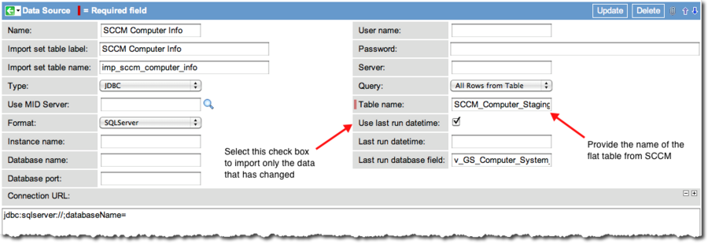
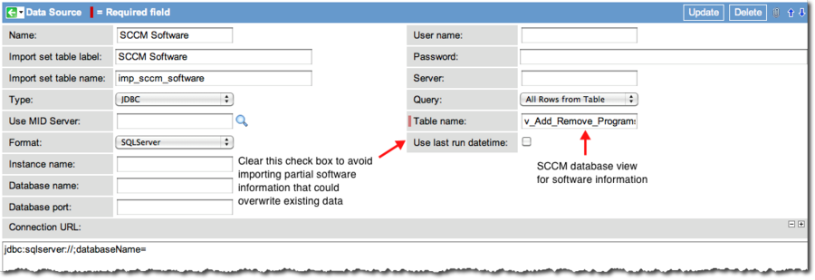

Microsoft SCCM Integration 3.0
| |
Note: This article applies to Fuji and earlier releases. For more current information, see Microsoft SCCM Integration at http://docs.servicenow.com
The ServiceNow Wiki is no longer being updated. Visit http://docs.servicenow.com for the latest product documentation. |
Contents
1 Overview
The Microsoft System Center Configuration Manager (SCCM) integration is a one direction import of SCCM data into ServiceNow's Configuration Management Database (CMDB). Scheduled imports bring relevant data from SCCM tables into the CMDB through a flat table created in the SQL database and mapped to the ServiceNow instance. The import is achieved using a JDBC connection via the MID Server. This functionality requires the Integration - Microsoft SCCM plugin and a new table in the SQL Server database.
2 Supported Version
ServiceNow Microsoft SCCM integration version 3.0 supports Microsoft SCCM 2007 R2. If you are using a later version and discover that the SCCM table names have changed, use the SCCM Transform Map to correct the mapping in the ServiceNow instance.
3 Activating the Plugin
The Integration - Microsoft SCCM plugin can be activated by an administrator and also activates the Integration - JDBC plugin.
| Click the plus to expand instructions for activating a plugin. |
|---|
|
If you have the admin role, use the following steps to activate the plugin.
|
4 How the Version 3.0 SCCM Integration Works
{kind=link}
- A flat table in the SQL Server database, called SCCM Computer Info [imp_sccm_computer_info], serves as a data source. This table contains data imported from SCCM tables and uses mappings defined in the ServiceNow Microsoft SCCM application to ensure correct data transfer between the ServiceNow CMDB and SCCM.
- A periodic schedule in the SQL database imports the Microsoft SCCM data into the SCCM Computer Info [imp_sccm_computer_info] table. This is not configurable from within a ServiceNow instance. In the case of a very large CMDB, it is good practice to import changes only and not the entire contents of each SCCM table.
- A schedule in the ServiceNow Microsoft SCCM application imports the contents of the SCCM Computer Info [imp_sccm_computer_info] data source table into the CMDB.
- The SCCM Software table is not imported into the flat table but is mapped directly to the ServiceNow Microsoft SCCM application. The data in the SCCM Software table is processed differently than data from other SCCM tables.
- Transforms in the ServiceNow Microsoft SCCM application map the fields in the SCCM Computer Info [imp_sccm_computer_info] data source table to existing fields in the ServiceNow CMDB.
4.1 Data Imported by ServiceNow
The base ServiceNow system imports the following information from SCCM data objects:
- Computer System: Model, manufacturer, name, number of CPUs, resource ID
- Operating System: Name, Service Pack, total visible memory (RAM)
- PC Bios: Serial number
- Processor: Name, manufacturer
- System: System domain
- Software: Software packages installed (Microsoft Office, Adobe Photoshop, iTunes, etc.)
5 Setup
5.1 Task 1: Connect to the SQL Server Database
Establish connection from within the ServiceNow Microsoft SCCM application to the SQL Server database in which Microsoft SCCM stores its data objects. This is the database in which you create the SCCM Computer Info [imp_sccm_computer_info] data source table. Navigate to Integration - Microsoft SCCM > Setup and configure connection to the SQL Server database. Make sure to select a MID Server. Click the Test data source connections UI Action to make sure you can connect to this database before continuing.
{kind=link}
5.2 Task 2: Create the Flat Table in the SQL Server Database
A database administrator must create a new table in the SQL Server SCCM database that uses the column names from SCCM listed here. The table can have any name (for example, SCCM_Computer_Staging). This is a flat table that gathers specific data directly from SCCM tables and makes it accessible to the ServiceNow instance through the use of an intermediate map provided in the baseline system. The SCCM columns are mapped to custom fields in this intermediate map that have been truncated to fit in the ServiceNow database schema. To view the intermediate map, navigate to Integration - Microsoft SCCM > Web Services > Computer Info. Fields in this list are mapped to existing fields in the CMDB by Transform Maps used by the SCCM Computer Info Data Source.
After creating the flat table, a database administrator must create a schedule in the SQL database for a periodic data import between the SCCM tables (such as hardware, disk and network adapter table) and the flat table. Then the SCCM import schedule can run right after the creation or update of the flat table and import the data into the SCCM Computer Info [imp_sccm_computer_info] table.
5.2.1 Table Columns
The flat table to be imported to the SCCM Computer Info [imp_sccm_computer_info] table must contain the following columns:
| v_GS_Computer_System_model0 | v_GS_Disk_manufacturer0_0 | v_GS_NETWORK_ADAPTER_CONFIGUR_resourceid_0 | v_GS_PC_BIOS_Name0 |
| v_GS_Computer_System_name0 | v_GS_Disk_manufacturer0_1 | v_GS_NETWORK_ADAPTER_CONFIGUR_resourceid_1 | v_GS_PC_BIOS_Resourceid |
| v_GS_Computer_System_status0 | v_GS_Disk_mediatype0_0 | v_GS_NETWORK_ADAPTER_CONFIGUR_resourceid_2 | v_GS_PC_BIOS_Serialnumber0 |
| v_GS_Computer_System_numberofprocessors0 | v_GS_Disk_mediatype0_1 | v_GS_NETWORK_ADAPTER_CONFIGUR_servicename0_0 | v_GS_Processor_manufacturer0 |
| v_GS_Computer_System_TimeStamp | v_GS_Disk_name0_0 | v_GS_NETWORK_ADAPTER_CONFIGUR_servicename0_1 | v_GS_Processor_name0 |
| v_GS_Computer_System_UserName0 | v_GS_Disk_name0_1 | v_GS_NETWORK_ADAPTER_CONFIGUR_servicename0_2 | v_GS_Processor_resourceid |
| v_GS_Computer_System_resourceid | v_GS_Disk_resourceid_0 | v_GS_NETWORK_ADAPTER_CONFIGUR_macaddress0_0 | v_GS_Processor_maxclockspeed0 |
| v_GS_Computer_System_manufacturer0 | v_GS_Disk_resourceid_1 | v_GS_NETWORK_ADAPTER_CONFIGUR_macaddress0_1 | v_GS_System_Domain |
| v_GS_Disk_deviceid0_0 | v_GS_NETWORK_ADAPTER_CONFIGUR_dhcpenabled0_0 | v_GS_NETWORK_ADAPTER_CONFIGUR_macaddress0_2 | v_GS_System_name |
| v_GS_Disk_deviceid0_1 | v_GS_NETWORK_ADAPTER_CONFIGUR_dhcpenabled0_1 | v_GS_Operating_System_totalvisiblememorysize0 | v_GS_System_resourceid |
| v_GS_Disk_deviceid_0 | v_GS_NETWORK_ADAPTER_CONFIGUR_dhcpenabled0_2 | v_GS_Operating_System_csdversion0 | v_GS_System_systemrole0 |
| v_GS_Disk_deviceid_1 | v_GS_NETWORK_ADAPTER_CONFIGUR_Ipaddress0_0 | v_GS_Operating_System_resourceid | v_GS_System_systemtype |
| v_GS_Disk_Interfacetype0_0 | v_GS_NETWORK_ADAPTER_CONFIGUR_Ipaddress0_1 | v_GS_Operating_System_caption0 | v_GS_WORKSTATION_STATUS_lasthwscan |
| v_GS_Disk_Interfacetype0_1 | v_GS_NETWORK_ADAPTER_CONFIGUR_Ipaddress0_2 | v_GS_Operating_System_version0 | v_GS_WORKSTATION_STATUS_resourceid |
5.2.2 SQL Script Sample
| |
Warning: This script is an example of an SQL Server script that creates a flat table for SCCM data and is not intended to be run as is. Use this script as a template only and modify it for your environment. |
| View the sample script |
|---|
CREATE TABLE [dbo].[SCCM_Computer_Staging](
[v_GS_Computer_System_resourceid] [int] NOT NULL,
[v_GS_Computer_System_UserName0] [varchar](50) NULL,
[v_GS_Computer_System_manufacturer0] [varchar](50) NULL,
[v_GS_Computer_System_numberofprocessors0] [int] NULL,
[v_GS_Computer_System_model0] [varchar](50) NULL,
[v_GS_Computer_System_status0] [varchar](50) NULL,
[v_GS_Computer_System_TimeStamp] [datetime] NULL,
[v_GS_Disk_resourceid_0] [int] NULL,
[v_GS_Disk_manufacturer0_0] [varchar](50) NULL,
[v_GS_Disk_deviceid0_0] [varchar](64) NULL,
[v_GS_Disk_mediatype0_0] [varchar](50) NULL,
[v_GS_Disk_Interfacetype0_0] [varchar](50) NULL,
[v_GS_Disk_deviceid_0] [varchar](50) NULL,
[v_GS_Disk_name0_0] [varchar](64) NULL,
[v_GS_Disk_resourceid_1] [int] NULL,
[v_GS_Disk_manufacturer0_1] [varchar](50) NULL,
[v_GS_Disk_deviceid0_1] [varchar](64) NULL,
[v_GS_Disk_mediatype0_1] [varchar](50) NULL,
[v_GS_Disk_Interfacetype0_1] [varchar](50) NULL,
[v_GS_Disk_deviceid_1] [varchar](64) NULL,
[v_GS_Disk_name0_1] [varchar](64) NULL,
[v_GS_NETWORK_ADAPTER_CONFIGUR_resourceid_0] [int] ,
[v_GS_NETWORK_ADAPTER_CONFIGUR_dhcpenabled0_0] [int] NULL,
[v_GS_NETWORK_ADAPTER_CONFIGUR_servicename0_0] [varchar](64) NULL,
[v_GS_NETWORK_ADAPTER_CONFIGUR_macaddress0_0] [varchar](64) NULL,
[v_GS_NETWORK_ADAPTER_CONFIGUR_Ipaddress0_0] [varchar](255) NULL,
[v_GS_NETWORK_ADAPTER_CONFIGUR_resourceid_1] [int] NULL,
[v_GS_NETWORK_ADAPTER_CONFIGUR_dhcpenabled0_1] [int] NULL,
[v_GS_NETWORK_ADAPTER_CONFIGUR_servicename0_1] [varchar](64) NULL,
[v_GS_NETWORK_ADAPTER_CONFIGUR_macaddress0_1] [varchar](50) NULL,
[v_GS_NETWORK_ADAPTER_CONFIGUR_Ipaddress0_1] [varchar](152) NULL,
[v_GS_NETWORK_ADAPTER_CONFIGUR_resourceid_2] [int] NULL,
[v_GS_NETWORK_ADAPTER_CONFIGUR_dhcpenabled0_2] [int] NULL,
[v_GS_NETWORK_ADAPTER_CONFIGUR_servicename0_2] [varchar](64) NULL,
[v_GS_NETWORK_ADAPTER_CONFIGUR_macaddress0_2] [varchar](64) NULL,
[v_GS_NETWORK_ADAPTER_CONFIGUR_Ipaddress0_2] [varchar](255) NULL,
[v_GS_Operating_System_resourceid] [int] NULL,
[v_GS_Operating_System_version0] [varchar](50) NULL,
[v_GS_Operating_System_csdversion0] [varchar](50) NULL,
[v_GS_Operating_System_totalvisiblememorysize0] [int] NULL,
[v_GS_Operating_System_caption0] [varchar](128) NULL,
[v_GS_PC_BIOS_Resourceid] [int] NULL,
[v_GS_PC_BIOS_Name0] [varchar](72) NULL,
[v_GS_PC_BIOS_Serialnumber0] [varchar](64) NULL,
[v_GS_Processor_resourceid] [int] NULL,
[v_GS_Processor_manufacturer0] [varchar](50) NULL,
[v_GS_Processor_name0] [varchar](64) NULL,
[v_GS_Processor_maxclockspeed0] [int] NULL,
[v_GS_System_resourceid] [int] NULL,
[v_GS_System_systemrole0] [varchar](50) NULL,
[v_GS_System_name] [varchar](64) NULL,
[v_GS_System_Domain] [varchar](50) NULL,
[v_GS_System_systemtype] [varchar](50) NULL,
[v_GS_WORKSTATION_STATUS_resourceid] [int] NULL,
[v_GS_WORKSTATION_STATUS_lasthwscan] [datetime] NULL,
[v_GS_Computer_System_name0] [varchar](64) NULL
) ON [PRIMARY]
select * from dbo.SCCM_Computer_Staging
INSERT INTO SCCM_Computer_Staging
( [v_GS_Computer_System_resourceid],
[v_GS_Computer_System_UserName0] ,
[v_GS_Computer_System_manufacturer0] ,
[v_GS_Computer_System_numberofprocessors0] ,
[v_GS_Computer_System_model0] ,
[v_GS_Computer_System_status0] ,
[v_GS_Computer_System_TimeStamp],
[v_GS_Computer_System_name0]
)
SELECT resourceid, UserName0, manufacturer0, numberofprocessors0, model0, status0, TimeStamp, Name0
FROM dbo.v_GS_COMPUTER_SYSTEM
WHERE ResourceID is not null
SELECT DISTINCT(a.MACAddress0),a.ResourceID
FROM [dbo].[v_GS_NETWORK_ADAPTER] a,
[dbo].[SCCM_Computer_Staging] b
WHERE a.AdapterType0 IS NOT NULL AND a.AdapterType0='Ethernet 802.3' AND a.MACAddress0 !='' AND a.AdapterType0 IS NOT NULL
AND a.resourceId= b.ResourceID AND a.MACAddress0 = b.MACAddress0 AND b.ServiceName0 IS NOT NULL AND b.ServiceName0!='FirehkMP'
ORDER BY a.ResourceID
update [dbo].[SCCM_Computer_Staging]
set v_GS_Disk_resourceid_0 = a.resourceid,
v_GS_Disk_manufacturer0_0= a.manufacturer0 ,
v_GS_Disk_deviceid0_0 = a.DeviceID0,
v_GS_Disk_mediatype0_0 = a.mediatype0,
v_GS_Disk_Interfacetype0_0 = a.interfacetype0,
v_GS_Disk_name0_0= a.name0
FROM [dbo].[v_GS_DISK]a , [dbo].[SCCM_Computer_Staging]b
WHERE a.resourceid = b.v_GS_Computer_System_resourceid
update [dbo].[SCCM_Computer_Staging]
set v_GS_Disk_resourceid_1 = a.resourceid,
v_GS_Disk_manufacturer0_1= a.manufacturer0 ,
v_GS_Disk_deviceid0_1 = a.DeviceID0,
v_GS_Disk_mediatype0_1 = a.mediatype0,
v_GS_Disk_Interfacetype0_1 = a.interfacetype0,
v_GS_Disk_name0_1= a.name0
from [dbo].[SCCM_Computer_Staging] b, [dbo].[v_GS_DISK] a
where b.v_GS_Computer_System_resourceid = a.ResourceID and b.v_GS_Disk_deviceid0_0 != a.DeviceID0
/****** Script for SelectTopNRows command from SSMS ******/
SELECT DISTINCT a.MACAddress0,a.Description0, a.ResourceID, a.AdapterType0
/*, b.DHCPEnabled0, b.ServiceName0, b.IPAddress0 */
FROM [dbo].[v_GS_NETWORK_ADAPTER] a
WHERE a.MACAddress0 is not null and a.MACAddress0 !='00:00:00:00:00:00' and a.AdapterType0='Ethernet 802.3'
and a.Description0 not like ('McAfee NDIS Intermediate Filter Miniport') and a.Description0
not like('Cisco AnyConnect VPN Virtual Miniport Adapter for Windows x64')
and a.Description0 not like ('Packet Scheduler Miniport') and a.Description0
not like ('VirtualBox Bridged Networking Driver Miniport') and a.Description0
not like ('VirtualBox Host-Only Ethernet Adapter')
ORDER BY ResourceID
SELECT DISTINCT a.MACAddress0,a.Description0, a.ResourceID, a.AdapterType0 ,b.DHCPEnabled0, b.ServiceName0, b.IPAddress0
FROM [dbo].[v_GS_NETWORK_ADAPTER] a ,
[dbo].[v_GS_NETWORK_ADAPTER_CONFIGUR] b
WHERE a.MACAddress0 is not null and a.MACAddress0 !='00:00:00:00:00:00' and a.AdapterType0='Ethernet 802.3' and a.Description0
not in ('McAfee NDIS Intermediate Filter Miniport','Cisco AnyConnect VPN Virtual Miniport Adapter for Windows x64',
'VirtualBox Host-Only Ethernet Adapter','Packet Scheduler Miniport','VirtualBox Bridged Networking Driver Miniport',
'Bluetooth Device (Personal Area Network)')
and a.resourceId= b.ResourceID and a.MACAddress0 = b.MACAddress0 and b.ServiceName0 is not null
and b.ServiceName0!='FirehkMP'
ORDER BY a.ResourceID
update [dbo].[SCCM_Computer_Staging]
set [v_GS_NETWORK_ADAPTER_CONFIGUR_resourceid_0] = b.ResourceID ,
[v_GS_NETWORK_ADAPTER_CONFIGUR_dhcpenabled0_0] = b.DHCPEnabled0 ,
[v_GS_NETWORK_ADAPTER_CONFIGUR_servicename0_0] = b.ServiceName0 ,
[v_GS_NETWORK_ADAPTER_CONFIGUR_macaddress0_0] = b.MACAddress0,
[v_GS_NETWORK_ADAPTER_CONFIGUR_Ipaddress0_0] = b.IPAddress0
FROM [dbo].[v_GS_NETWORK_ADAPTER] a ,
[dbo].[v_GS_NETWORK_ADAPTER_CONFIGUR] b,
[dbo].[SCCM_Computer_Staging] c
WHERE a.MACAddress0 is not null and a.MACAddress0 !='00:00:00:00:00:00' and a.AdapterType0='Ethernet 802.3'
and a.Description0 not in ('McAfee NDIS Intermediate Filter Miniport','Cisco AnyConnect VPN Virtual Miniport Adapter for Windows x64',
'VirtualBox Host-Only Ethernet Adapter','Packet Scheduler Miniport','VirtualBox Bridged Networking Driver Miniport',
'Bluetooth Device (Personal Area Network)')
and a.resourceId= b.ResourceID and a.MACAddress0 = b.MACAddress0 and b.ServiceName0 is not null
and b.ServiceName0!='FirehkMP' and c.v_GS_Computer_System_resourceid = b.ResourceID
update [dbo].[SCCM_Computer_Staging]
set [v_GS_NETWORK_ADAPTER_CONFIGUR_resourceid_1] = b.ResourceID ,
[v_GS_NETWORK_ADAPTER_CONFIGUR_dhcpenabled0_1] = b.DHCPEnabled0 ,
[v_GS_NETWORK_ADAPTER_CONFIGUR_servicename0_1] = b.ServiceName0 ,
[v_GS_NETWORK_ADAPTER_CONFIGUR_macaddress0_1] = b.MACAddress0,
[v_GS_NETWORK_ADAPTER_CONFIGUR_Ipaddress0_1] = b.IPAddress0
FROM [dbo].[v_GS_NETWORK_ADAPTER] a ,
[dbo].[v_GS_NETWORK_ADAPTER_CONFIGUR] b,
[dbo].[SCCM_Computer_Staging] c
WHERE a.MACAddress0 is not null and a.MACAddress0 !='00:00:00:00:00:00' and a.AdapterType0='Ethernet 802.3'
and a.Description0 not in ('McAfee NDIS Intermediate Filter Miniport','Cisco AnyConnect VPN Virtual Miniport Adapter for Windows x64',
'VirtualBox Host-Only Ethernet Adapter','Packet Scheduler Miniport','VirtualBox Bridged Networking Driver Miniport','Bluetooth Device
(Personal Area Network)') and a.resourceId= b.ResourceID and a.MACAddress0 = b.MACAddress0 and b.ServiceName0 is not null
and b.ServiceName0!='FirehkMP' and c.v_GS_NETWORK_ADAPTER_CONFIGUR_macaddress0_0 != b.MACAddress0
and c.v_GS_Computer_System_resourceid = b.ResourceID
update [dbo].[SCCM_Computer_Staging]
set v_GS_Disk_resourceid_0 = a.resourceid,
v_GS_Disk_manufacturer0_0= a.manufacturer0 ,
v_GS_Disk_deviceid0_0 = a.DeviceID0,
v_GS_Disk_mediatype0_0 = a.mediatype0,
v_GS_Disk_Interfacetype0_0 = a.interfacetype0,
v_GS_Disk_name0_0= a.name0
FROM [dbo].[v_GS_DISK]a , [dbo].[SCCM_Computer_Staging]b
WHERE a.resourceid = b.v_GS_Computer_System_resourceid
UPDATE [dbo].[SCCM_Computer_Staging]
set v_GS_Disk_resourceid_1 = a.resourceid,
v_GS_Disk_manufacturer0_1= a.manufacturer0 ,
v_GS_Disk_deviceid0_1 = a.DeviceID0,
v_GS_Disk_mediatype0_1 = a.mediatype0,
v_GS_Disk_Interfacetype0_1 = a.interfacetype0,
v_GS_Disk_name0_1= a.name0
FROM [dbo].[SCCM_Computer_Staging] b, [dbo].[v_GS_DISK] a
WHERE b.v_GS_Computer_System_resourceid = a.ResourceID and b.v_GS_Disk_deviceid0_0 != a.DeviceID0
update [dbo].[SCCM_Computer_Staging]
set [v_GS_Operating_System_resourceid] = a.ResourceID,
[v_GS_Operating_System_version0] = a.version0,
[v_GS_Operating_System_csdversion0] = a.csdversion0,
[v_GS_Operating_System_totalvisiblememorysize0] = a.totalvisiblememorysize0,
[v_GS_Operating_System_caption0] = a.caption0
from [dbo].v_GS_OPERATING_SYSTEM a , [dbo].[SCCM_Computer_Staging] b
where a.ResourceId = b.v_GS_Computer_System_resourceid
update [dbo].[SCCM_Computer_Staging]
set [v_GS_PC_BIOS_Resourceid] = a.ResourceID,
[v_GS_PC_BIOS_Name0] = a.Name0,
[v_GS_PC_BIOS_Serialnumber0] = a.SerialNumber0
from [dbo].v_GS_PC_BIOS a , [dbo].[SCCM_Computer_Staging] b
where a.ResourceId = b.v_GS_Computer_System_resourceid
update [dbo].[SCCM_Computer_Staging]
set [v_GS_Processor_resourceid] = a.ResourceID,
[v_GS_Processor_manufacturer0] = a.Manufacturer0,
[v_GS_Processor_name0] = a.Name0,
[v_GS_Processor_maxclockspeed0] = a.MaxClockSpeed0
from [dbo].v_GS_Processor a , [dbo].[SCCM_Computer_Staging] b
where a.ResourceId = b.v_GS_Computer_System_resourceid
update [dbo].[SCCM_Computer_Staging]
set [v_GS_System_resourceid] = a.ResourceID ,
[v_GS_System_systemrole0]= a.SystemRole0 ,
[v_GS_System_name] = a.Name0,
[v_GS_System_Domain] = a.Domain0,
[v_GS_System_systemtype] = a.SystemType0
from [dbo].v_GS_System a , [dbo].[SCCM_Computer_Staging] b
where a.ResourceId = b.v_GS_Computer_System_resourceid
update [dbo].[SCCM_Computer_Staging]
set [v_GS_WORKSTATION_STATUS_resourceid] = a.ResourceID,
[v_GS_WORKSTATION_STATUS_lasthwscan] =a.LastHWScan
from [dbo].v_GS_WORKSTATION_STATUS a , [dbo].[SCCM_Computer_Staging] b
where a.ResourceId = b.v_GS_Computer_System_resourceid
select * from [dbo].[SCCM_Computer_Staging]
select b.resourceId
FROM [dbo].[v_GS_NETWORK_ADAPTER] a ,
[dbo].[v_GS_NETWORK_ADAPTER_CONFIGUR] b,
[dbo].[SCCM_Computer_Staging] c
WHERE a.MACAddress0 is not null and a.MACAddress0 !='00:00:00:00:00:00' and a.AdapterType0='Ethernet 802.3'
and a.Description0 not in ('McAfee NDIS Intermediate Filter Miniport','Cisco AnyConnect VPN Virtual Miniport Adapter for Windows x64',
'VirtualBox Host-Only Ethernet Adapter','Packet Scheduler Miniport','VirtualBox Bridged Networking Driver Miniport','Bluetooth Device
(Personal Area Network)') and a.resourceId= b.ResourceID and a.MACAddress0 = b.MACAddress0 and b.ServiceName0 is not null and
b.ServiceName0!='FirehkMP' and c.v_GS_NETWORK_ADAPTER_CONFIGUR_macaddress0_0 != b.MACAddress0 and
c.v_GS_Computer_System_resourceid = b.ResourceID
ORDER BY b.ResourceID
select b.resourceId,b.DHCPEnabled0,b.IPAddress0,b.ServiceName0
FROM [dbo].[v_GS_NETWORK_ADAPTER] a ,
[dbo].[v_GS_NETWORK_ADAPTER_CONFIGUR] b
WHERE a.MACAddress0 is not null and a.MACAddress0 !='00:00:00:00:00:00' and a.AdapterType0='Ethernet 802.3'
and a.Description0 not in ('McAfee NDIS Intermediate Filter Miniport','Cisco AnyConnect VPN Virtual Miniport Adapter for Windows x64',
'VirtualBox Host-Only Ethernet Adapter','Packet Scheduler Miniport','VirtualBox Bridged Networking Driver Miniport','Bluetooth Device
(Personal Area Network)') and a.resourceId= b.ResourceID and a.MACAddress0 = b.MACAddress0 and b.ServiceName0 is not null and
b.ServiceName0!='FirehkMP'
select a.v_GS_NETWORK_ADAPTER_CONFIGUR_resourceid_0,
a.v_GS_NETWORK_ADAPTER_CONFIGUR_Ipaddress0_0,
a.v_GS_NETWORK_ADAPTER_CONFIGUR_macaddress0_0,
a.v_GS_NETWORK_ADAPTER_CONFIGUR_dhcpenabled0_0
FROM [dbo].[SCCM_Computer_Staging] a
|
5.3 Task 3: Configure the Data Sources
Before you schedule an import of the SCCM data into the instance, configure the SCCM data sources, the SCCM flat table and the SCCM Software table to ensure that the CMDB receives appropriate data.
- Navigate to Integration - Microsoft SCCM > Data Sources.
- Select SCCM Computer Info from the list.
- Enter the name of the flat table created in Task 2 in the Table name field of the Data Source form.
- Select the Use last run datetime check box.
- This helps performance by ensuring that only computer CI information that has changed is imported.
- 
- Click Update.
- Select SCCM Software from the list of data sources.
- The Table name field is pre-configured with v_Add_Remove_Programs, an SCCM database view that provides data on installed software.
- Clear the Use last run datetime check box to ensure that the software data source provides complete data.
- ServiceNow assumes that the import represents all relationships that exist and adjusts the CMDB accordingly. Partial data received from the SCCM Software table can cause the deletion of active relationships.
- 
{kind=link}
{kind=link}
5.4 Task 4: Schedule an Import
After data has been imported from SCCM into the SCCM Computer Info [imp_sccm_computer_info] table in the SQL Server database, schedule an import from that table into the ServiceNow instance using the default transform map provided in the plugin.
5.4.1 Creating an Import Schedule
- Navigate to Integration - Microsoft SCCM > Scheduled Import.
- Select the SCCM System import from the list.
- Select an import type (Day, Week, etc.) and when the import should run.
- The selection in the Run type field presents different time options.
- Select the Conditional check box to display a field in which to define an import condition.
- Select either execute script check box to enter a script that runs before or after the import.
- For example, you can create log entries for when the import starts and stops by using scripts in these fields.
- Click Update to schedule the import or click Execute Now to perform the import immediately.
- After ServiceNow imports data from the SCCM Computer Info [imp_sccm_computer_info] table, the import runs automatically from the SCCM Software [imp_sccm_software] table.
{kind=link}
5.4.2 SCCM Transform Map
The following field mapping is provided for importing data from the SCCM Computer Info [imp_sccm_computer_info] and SCCM Software [imp_sccm_software] tables into existing fields in the ServiceNow CMDB. You can add or delete fields to this transform map.
To access the transform map:
- Navigate to Integration - Microsoft SCCM > Data Sources.
- Open the SCCM Computer Info data source record.
- Select SCCM Computer Info from the Transforms related list.
- The default SCCM field map appears.
- Refer to Task 2 for the full list of fields in SCCM available for use in data imports.
| Source Field (SCCM) | Target Field (CMDB) | Coalesce |
|---|---|---|
| u_v_gs_compute_rofprocessors0 | cpu_count | false |
| u_v_gs_processor_name0 | cpu_type | false |
| u_v_gs_compute_tem_resourceid | correlation_id | false |
| u_v_gs_pc_bios_serialnumber0 | serial_number | false |
| u_v_gs_compute__manufacturer0 | manufacturer | false |
| u_v_gs_operati_em_csdversion0 | os_service_pack | false |
| u_v_gs_computer_system_model0 | model_id | false |
| u_v_gs_computer_system_name0 | name | false |
| u_v_gs_processor_manufacturer0 | cpu_manufacturer | false |
| u_v_gs_process_maxclockspeed0 | cpu_speed | false |
| u_v_gs_operati_ystem_caption0 | os | false |
| u_v_gs_operati_blememorysize0 | ram | false |
| u_v_gs_system_domain | os_domain | false |
| [Script] | sys_id | true |